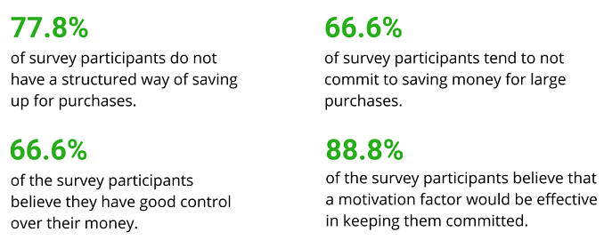
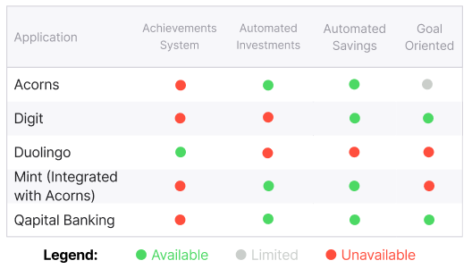
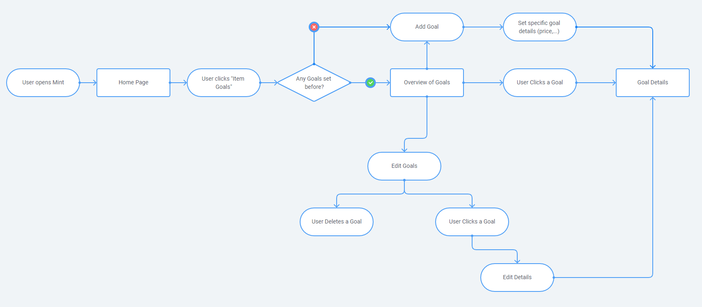
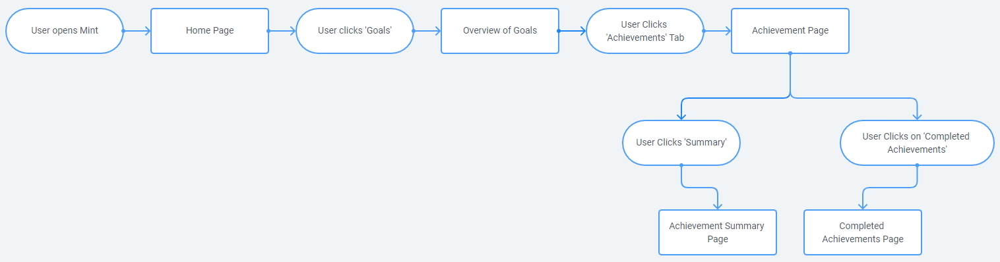
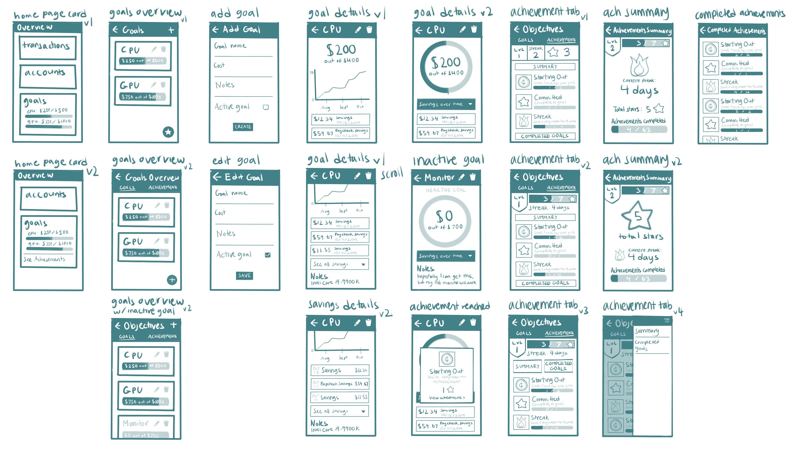

Home
About
Resume
Home
About
Resume
The world needs automation and I'm here to help!

“As part of UC San Diego’s “Designing Human-Data Interactions” course, I was tasked in a team of three to extend or redesign a feature that helps a specific type of user to save for a major upcoming high-cost purchase. Within the ten-week time frame of the course, our team learned about the UX/product design process that included prototyping and competitive audits.”
By extending the Mint app, our team hopes to further motivate young students to be more active in saving money.
Our team has decided to use young students as our target user. We believe the younger generation of students are an ideal target user because students should learn at a younger age to start saving money whether it would be for big or small purchases; this would allow saving money to grow into a beneficial habit.
By using our feature, our users should be able to:
“Young students especially those who are interested in personal finance need to be more motivated when using personal finance apps to promote a more active effort towards saving money.”
At some point in their life, everyone experienced having a flow of income for their first time. For many, it can be overwhelming. But as time goes on, we all realize that a little effort done periodically can go a long way. Budgeting allows people to save efficiently and safely month after month but at times it is very difficult to pull off. Instead, setting money aside to gradually accumulate for certain purchases would ensure a more active/flexible way of saving money. It can be extremely effective, fun, and simple. It’s easy to become demotivated from constantly checking bank applications or money management apps like Mint. Such applications are very general and stationary in financial planning, and do little besides just listing numbers. With a lighthearted money saving app focused on achievements and user satisfaction, the biggest issue in money management will be tackled: motivation. Therefore, our project aims to help youths learning to manage their money and to stay motivated consistently to save up for a high-cost purchase.
Before we started to design our feature, we conducted a survey on the local student population through a Google Form that was sent out to popular UCSD Facebook pages. We figured a survey would preserve anonymity so people don’t have to
associate their financial habits with their identities. Our survey process also allowed us to gain an understanding of not just students, but also teens
and young adults with their first jobs.
The major findings of our survey are summarized below:

1.) Students have good control over their money, yet they often do not commit to saving periodically for large purchases
2.) Students are discouraged when trying to save up.
3.) Students do not have a structured way of saving their money for specific purchases.
“It’s a process, not something dreamt overnight!”
The key principle of motivation in money management was inspired by the innovative features offered by Mint’s competitors [Digit, Qapital Banking, and Acorns(formerly)] and by Mint’s pre-existing integrations (Acorns). However, the most important feature for motivation that was absent in all of these apps was an achievement system which was mainly inspired by the language-learning app, Duolingo.
Thus, to gauge how we should improve Mint, we performed a competitive audit and concluded that Mint (along with its integration with Acorns) needed to include an achievement system along with more user-defined goals.

UX Flows
Before we design our feature onto Mint, we had to create UX flows that envisioned how our user was to navigate within the app to either create their goals or to manage their achievements.
Flow 1: Managing User Goals (Click to View)

Flow 2: Managing User Achievements (Click to View)

UX Sketches
After the creation of UX flows, we created UI sketches to either conform to our UX flows or to change how our users were to interact with our features.
UI Sketches (Click to View)

Low Fidelity Paper Prototypes
{kind=link}